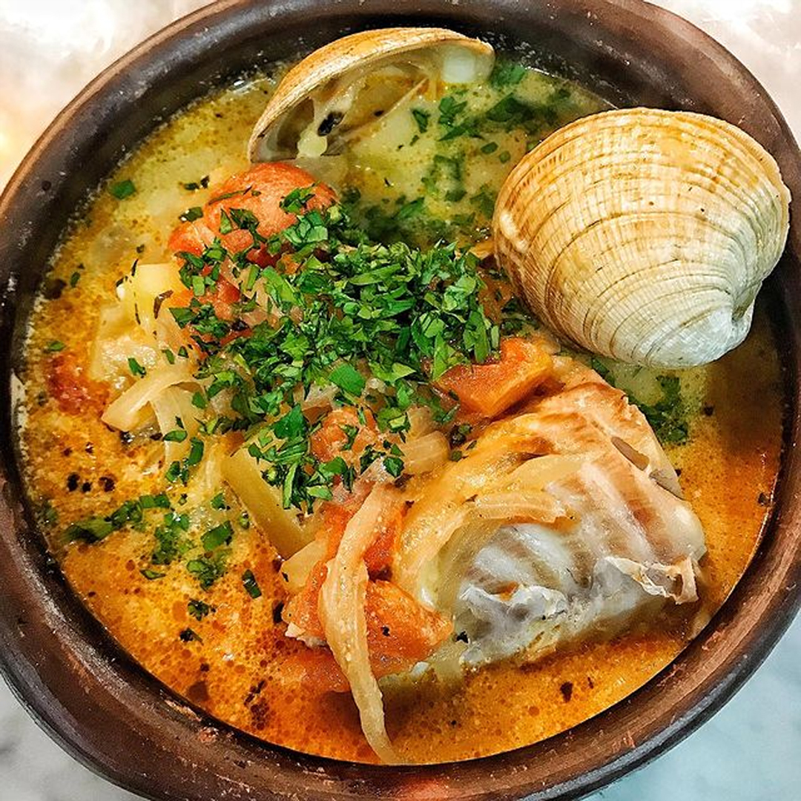

Caldillo de Congrio
Back to main page

Description
Caldillo de congrio (Spanish for cusk-eel stock) is a Chilean fish soup. The dish is made of congrio Dorado (pink cusk-eel) or Colorado (red cusk-eel),
a cusk-eel species common in the Chilean Sea.[2][3] The dish is made by boiling together fish heads, onion, garlic, coriander, carrots and pepper.
Once these are boiled, only the stock is used. Onion and garlic are fried together with chopped tomatoes. The vegetables are mixed then with the stock,
cream, boiled potatoes and marinated and boiled conger.
Chilean Literature Nobel laureate Pablo Neruda wrote an ode to Caldillo de congrio called Oda al Caldillo de Congrio.
The Communist Party of Chile has a tradition of serving the Chilean press and media caldillo de congrio at an annual event at which important
announcements are made regarding the current year.
Recipe :P
Ingredients
- Olive oil -- 2 to 3 tablespoons
- Onion, thinly sliced -- 1
- Garlic, minced -- 3 to 4 cloves
- Paprika -- 1 tablespoon
- Tomatoes, seeded and chopped -- 2 cups
- White wine -- 1 cup
- Rich fish stock -- 4 cups
- Parsley, finely chopped -- 2 tablespoons
- Bay leaf -- 1
- Salt and pepper -- to taste
- White fish or conger eel filets, cut into chunks -- 1 pound
- Heavy cream -- 1/2 cup
- Cilantro, chopped -- 1/2 bunch
Steps!
- Add the onion and saute until translucent, about 3 to 4 minutes. Stir in the garlic and paprika and saute for another 1 to 2 minutes.
- Stir in the tomatoes and simmer for another 4 or 5 minutes to cook the tomatoes down a bit. Add the wine and cook down for another minute or so.
- Pour in the fish stock and add the parsley, bay leaf, salt and pepper. Bring to a boil, and then reduce heat to medium-low and simmer for 15 to 20 minutes.
- Add the fish or eel and simmer until the fish is cooked through, about 5 to 8 minutes.
- Stir in the cream and adjust seasoning with salt and pepper. Serve in bowls, garnished with the some of the chopped cilantro and a few dashes of salsa de ají or other hot pepper sauce.
- ENJOY!!